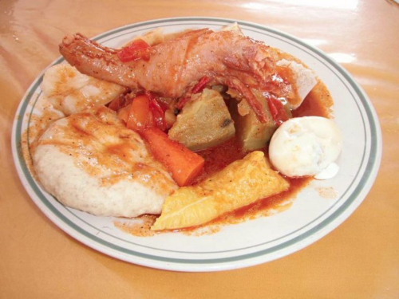
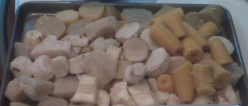
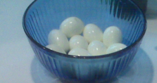
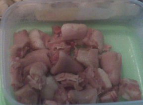

Boil up Popularized from all around the country, but with its main focus
in the southern regions of Belize, “Boil up” is one of the most eaten and enjoyed dish in Belize.
Whether it’s to satisfy your own taste buds or bringing the family together for a fancy local feast…
here’s how you can join in on this delectable dish right at home.

Here’s a recipe:
Ingredients:
* 2 lbs. fish
* 1 lb. pigtail
* 4 eggs
* 2 yams
* 2 cassavas
* 4 large sweet potatoes
* 4 ripe plantains
* 6 green bananas
* 4 cups of water
* 4 tsp baking powder
* ½ cup of water, as well as a large pot of water
* 6 tomatoes
* 2 onions
* 2 green peppers
* 4 cups flour
* Salt and pepper
* Tomato sauce



Directions for Preparing Boil Up
Prepare the boiled cakes by combining the flour, baking powder, and water to form a soft dough.
Separate the dough into three-inch balls and flatten each.
Prepare a tomato sauce by first sautéing onions and then adding diced tomatoes. Add salt and pepper to taste.
Peel the yam, cassava, and sweet potatoes
Chop the yam, cassava, and sweet potatoes into chunks measuring about three inches.
Remove the skin of the green bananas and slice.
Peel the ripe plantains and chop them into cubes.
Fill a Dutch oven pot with water and bring to a boil.
Add the chopped ground provisions together with the green bananas and plantain cubes.
Add the cubes of salted pork to the pot.
Cook the pork, bananas, plantains, and ground provisions until tender.
A few minutes before it is cooked, place the boiled cake dough in the water.
When cooked, use a slotted spoon to remove everything besides the salted pork.
Add the raw fish slices to the pot containing the water and salted pork.
Cook together until the fish starts to become tender.
Place the eggs into the pot and hard-boil them.
Remove the eggs from the pot, drench them in cold water and remove the shells.
Slice the eggs in halves.
Plate all of the boiled foods on a shallow dish.
Place the boiled eggs on top of the provisions, bananas, and plantains, and boil cakes, fish, and salted pork.
Finish by pouring the tomato sauce over everything.